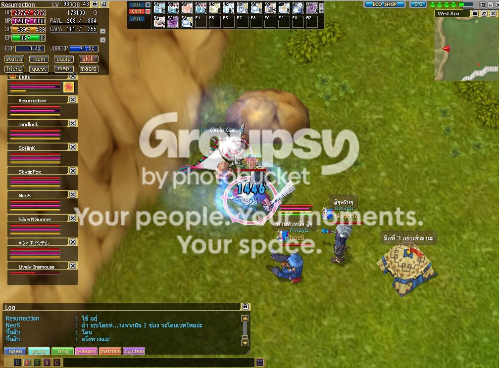

กิจกรรม ภาพโดนใจ "มิตรภาพ ในริงแมว"
กิจกรรมนี้จัดขึ้น ให้เฉพาะริงแมวได้ลง รูปสำหรับกิจกรรม
รายละเอียดกิจกรรม
กิจกรรมแรก : ประกวดภาพ ภาพ ScreenShot เด็ดโดนใจ ในหัวข้อ "มิตรภาพ ในริงแมว"
เนื้อหากิจกรรม : ScreenShot ภาพโดนใจ ที่มีเนื้อหาเกี่ยวกับ "มิตรภาพ ในริงแมว"
รายละเอียด เพิ่มเติม : อนุญาติ ให้พิมพิ์ข้อความลงในภาพได้ แต่ห้ามตกแต่งรูปเพิ่มเติมนอก จากข้อความ
รายละเอียดเพิ่มเติม : ติดตามได้ที่บอร์ดริงหรือแชทริง
ของรางวัล : ที่1-3 จะได้รับเบบี้ เผ่าคน จำนวน1 ตัว ทุกคน พร้อมรับเงินรางวัลตามลำดับดังนี้
ที่1 : เบบี้เผ่าคน - พร้อมรับเงินรางวัล 10M
ที่2 : เบบี้เผ่าคน -พร้อมรับเงินรางวัล 5M
ที่3 : เบบี้เผ่าคน -พร้อมรับเงินรางวัล 3M
ทุกผลงานที่เข้าประกวดจะได้ รับการืด R4ที่ระลึก คละ ใบ คนละ1 ใบ
ระยะเวลา 15 กพ- 6 มีนาคม 2554
รายละเอียดในการส่ง
ให้แนบ รายละเอียดส่วนตัวลงด้วย
1.ชื่อเล่น
2.ตัวละคร
3.ชื่อริง ตามสาขาที่อยู่
การตัดสินจะตัดสิน โดย พี่โป้งและนนท์ เท่านั้น
ผลงานที่ส่งมา สามารถแก้ไขได้ จนกว่าจะหมดระยะเวลา
ตัวอย่าง
